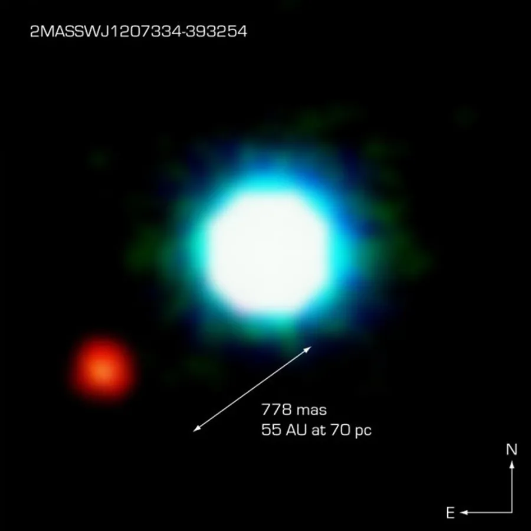

September 10, 2004
2M1207 b: first image of an exoplanet
In April 2004, astronomers using the NACO instrument on ESO's Very Large Telescope discovered a faint reddish point of light next to the young brown dwarf 2M1207. It is more than 100 times fainter than the brown dwarf, and its spectrum shows water. Model calculations pointed to about five Jupiter masses.
New images from early 2005 showed that the two objects move together and are therefore bound to each other. ESO called it the first image of a planet outside the Solar System. The separation is 55 times the Earth–Sun distance; the system is about 200 light-years away.
Sources: ESO: "Is This Speck of Light an Exoplanet?", 2004-09-10; ESO: "Yes, it is the Image of an Exoplanet", 2005-04-30